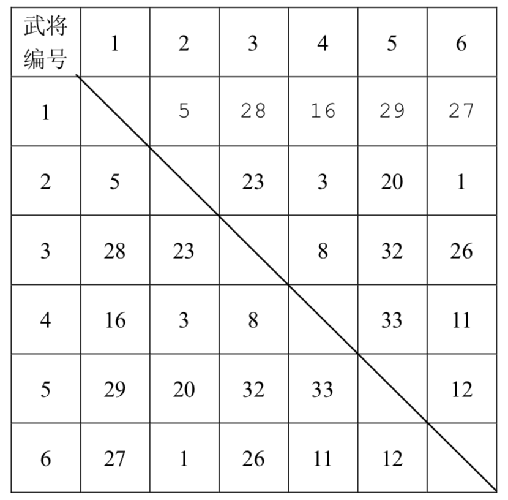
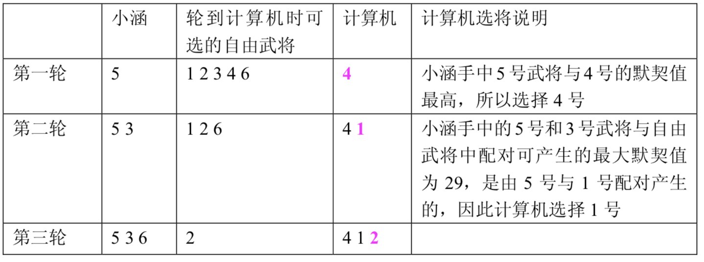

小涵很喜欢电脑游戏，这些天他正在玩一个叫做《三国》的游戏。
在游戏中，小涵和计算机各执一方，组建各自的军队进行对战。游戏中共有 $N$ 位武将（$N$ 为偶数且不小于 $4$），任意两个武将之间有一个“默契值”，表示若此两位武将作为一对组合作战时，该组合的威力有多大。游戏开始前，所有武将都是自由的（称为自由武将，一旦某个自由武将被选中作为某方军队的一员，那么他就不再是自由武将了），换句话说，所谓的自由武将不属于任何一方。游戏开始，小涵和计算机要从自由武将中挑选武将组成自己的军队，规则如下：小涵先从自由武将中选出一个加入自己的军队，然后计算机也从自由武将中选出一个加入计算机方的军队。接下来一直按照 “小涵→计算机→小涵→......” 的顺序选择武将，直到所有的武将被双方均分完。然后，程序自动从双方军队中各挑出一对默契值最高的武将组合代表自己的军队进行二对二比武，拥有更高默契值的一对武将组合获胜，表示两军交战，拥有获胜武将组合的一方获胜。
已知计算机一方选择武将的原则是尽量破坏对手下一步将形成的最强组合，它采取的具体策略如下：任何时刻，轮到计算机挑选时，它会尝试将对手军队中的每个武将与当前每个自由武将进行一一配对，找出所有配对中默契值最高的那对武将组合，并将该组合中的自由武将选入自己的军队。
下面举例说明计算机的选将策略，例如，游戏中一共有 $6$ 个武将，他们相互之间的默契值如下表所示

双方选将过程如下所示：

小涵想知道，如果计算机在一局游戏中始终坚持上面这个策略，那么自己有没有可能必胜？如果有，在所有可能的胜利结局中，自己那对用于比武的武将组合的默契值最大是多少？
假设整个游戏过程中，对战双方任何时候均能看到自由武将队中的武将和对方军队的武将。为了简化问题，保证对于不同的武将组合，其默契值均不相同。
 Comet OJ
Comet OJ